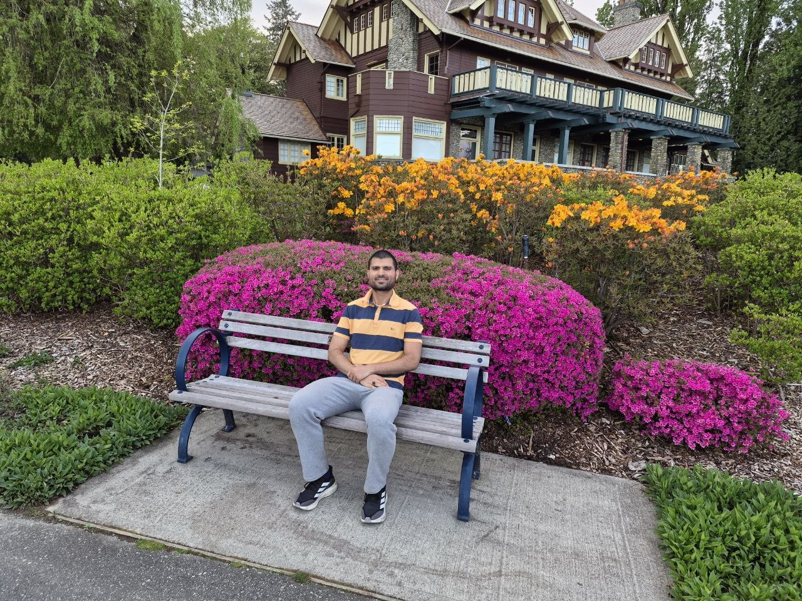

Undergraduate Computer Science Student (3.81 GPA)
Multi-disciplinary researcher bridging theoretical computation with high-performance 3D visual computing.

I am an undergraduate student at Simon Fraser University seeking a thesis-based Master's program to tackle complex, cross-domain challenges. My academic and research interests lie firmly at the intersection of Deep Learning, Differentiable Rendering, and Computer Vision.
I am passionate about building physically-grounded simulations and extracting structured, efficient representations from complex spatial data. Outside of the lab and the classroom, I like to stay active and explore British Columbia. In my free time, you can usually find me hiking the local trails, running, or experimenting with new recipes through cooking.
Simon Fraser University, Burnaby, BC
Languages & Frameworks: Python, C++, PyTorch, NumPy, Pandas, SciPy, MATLAB, Apache Spark
Concepts & Domains: Machine Learning, Deep Learning, Neural Networks, SVMs, AutoEncoders, Differentiable Rendering, Quantum Computing, Linear Algebra, Calculus
Tools: Mitsuba 3, Software Engineering, Unit Testing
Academic Project (CMPT 461)
CMPT464 Group Project